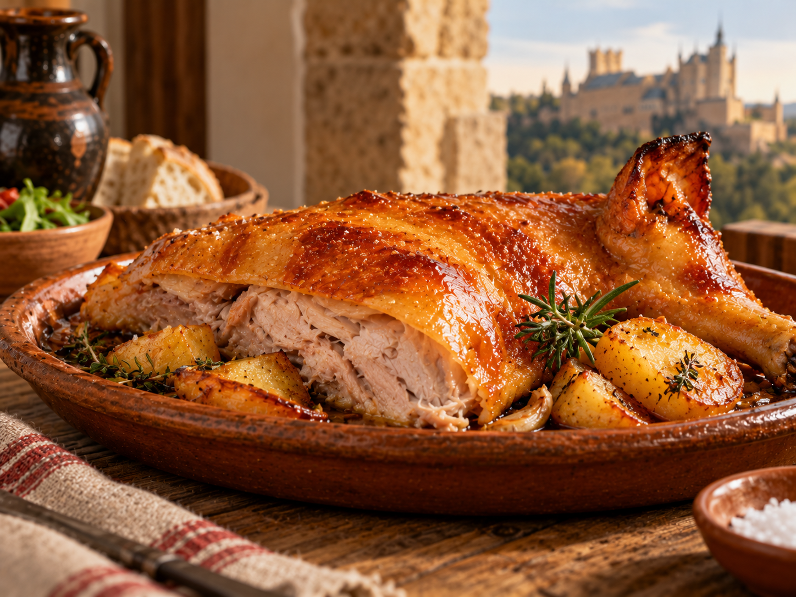
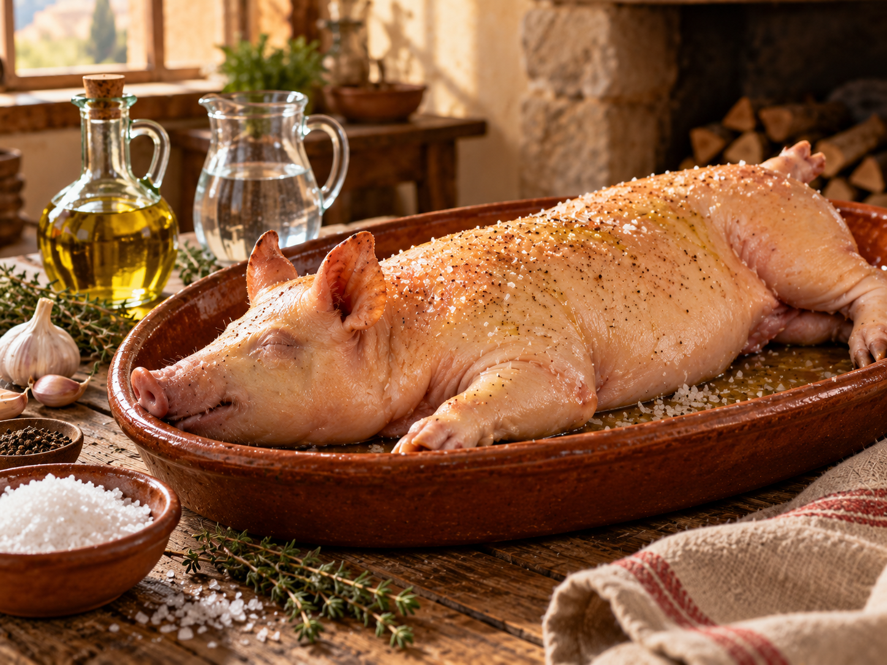
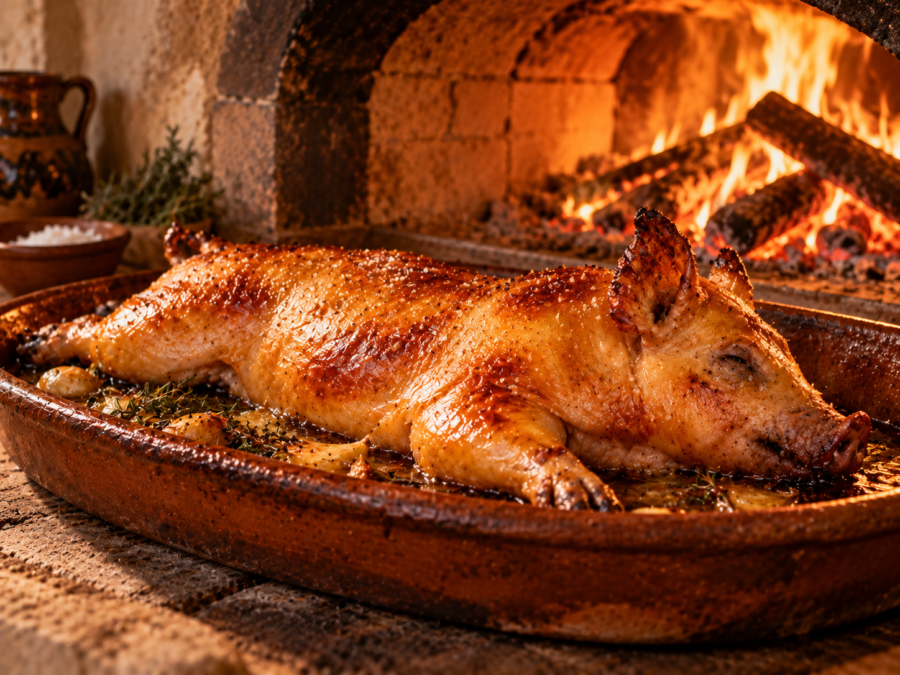
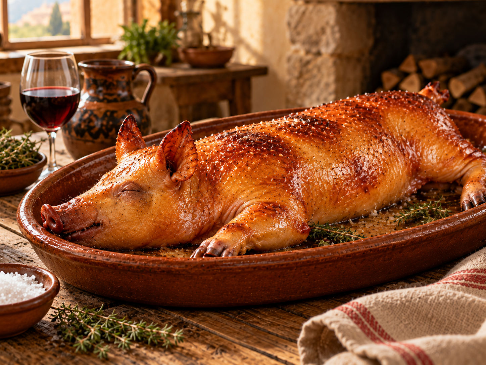

RECETA TRADICIONAL
Cochinillo de la abuela
Una receta sencilla basada en un buen producto, una cocción lenta y el tiempo necesario para conseguir una carne tierna y una piel dorada y crujiente.

El cochinillo asado es uno de los platos más conocidos de la gastronomía castellana. Su preparación tradicional utiliza pocos ingredientes, dejando todo el protagonismo al producto y al proceso de asado.
Uno de los aspectos más importantes de esta receta es controlar correctamente la temperatura del horno. Una cocción progresiva permite que la carne conserve su jugosidad mientras la piel se va dorando hasta alcanzar una textura crujiente.
También es importante prestar atención a la posición del cochinillo durante el asado y a la cantidad de líquido utilizada. El objetivo es cocinar la carne sin que la piel pierda la textura característica que buscamos al finalizar la receta.
ANTES DE EMPEZAR
Ingredientes
- 1 cochinillo limpio
- Agua
- Sal
- Aceite de oliva
- Patatas para acompañar, opcional

PASO A PASO
Preparación
-
Preparar el cochinillo
Comenzamos preparando la pieza y comprobando que esté completamente limpia. Añadimos sal de forma uniforme y la colocamos en una fuente adecuada para horno.
-
Preparar el horno
Precalentamos el horno y añadimos una pequeña cantidad de agua en el fondo de la fuente. Es importante que el líquido no cubra la piel.
-
Primera fase del asado
Introducimos la fuente en el horno y dejamos que el cochinillo se cocine lentamente. Durante esta primera fase buscamos que la carne se vaya haciendo de forma uniforme.
-
Dorar la piel
En la última parte de la cocción aumentamos ligeramente la temperatura para favorecer que la piel termine de dorarse y adquiera una textura crujiente.


EL TOQUE FINAL
Una piel bien crujiente
Para obtener una piel crujiente es importante evitar que permanezca en contacto directo con líquidos durante el asado. El aumento de temperatura al final de la cocción ayuda a conseguir el acabado dorado.
Una vez fuera del horno conviene dejar reposar el cochinillo durante unos minutos antes de servirlo. Así podemos terminar de preparar la guarnición mientras la carne conserva sus jugos.
Cómo preparar cochinillo al horno
Vídeo sobre la preparación de cochinillo asado al horno.
¿Quieres descubrir otra receta?
Consulta nuestra selección y descubre otra forma de preparar el cochinillo.
Volver a recetas